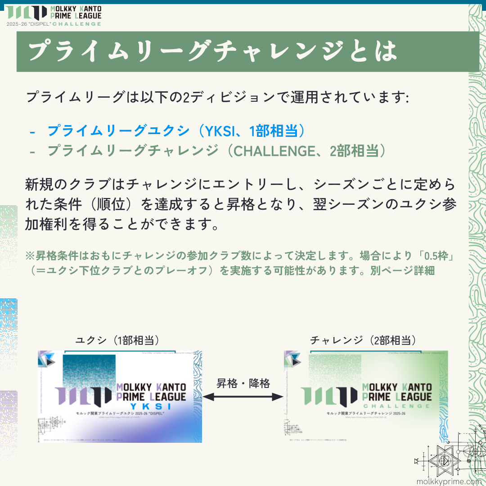
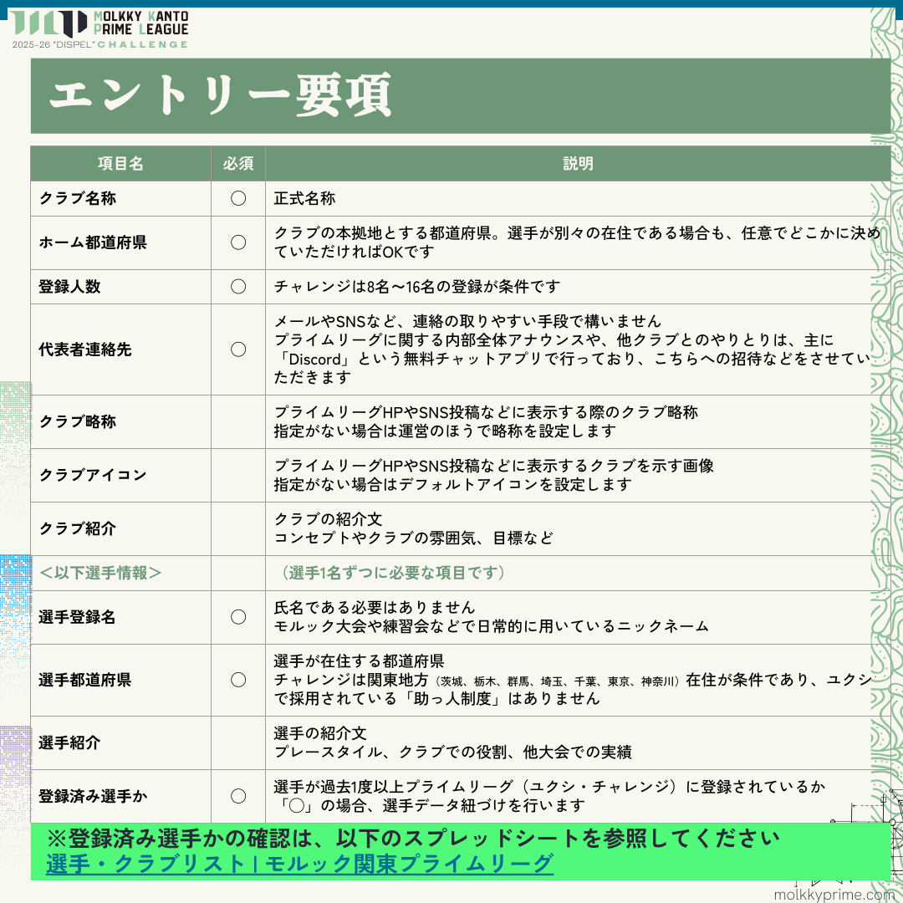
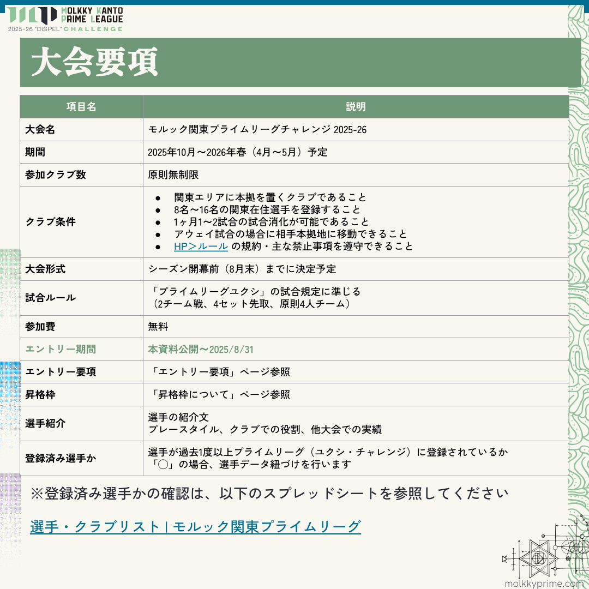
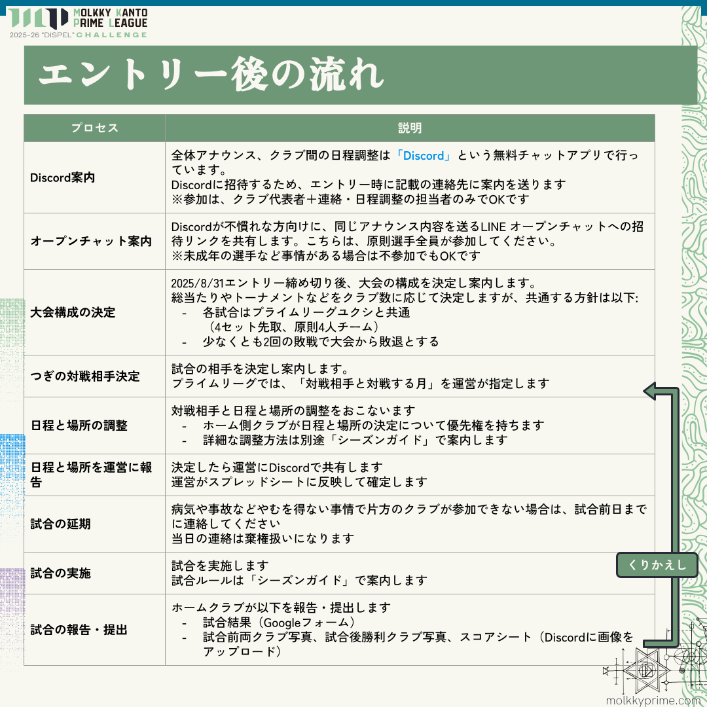
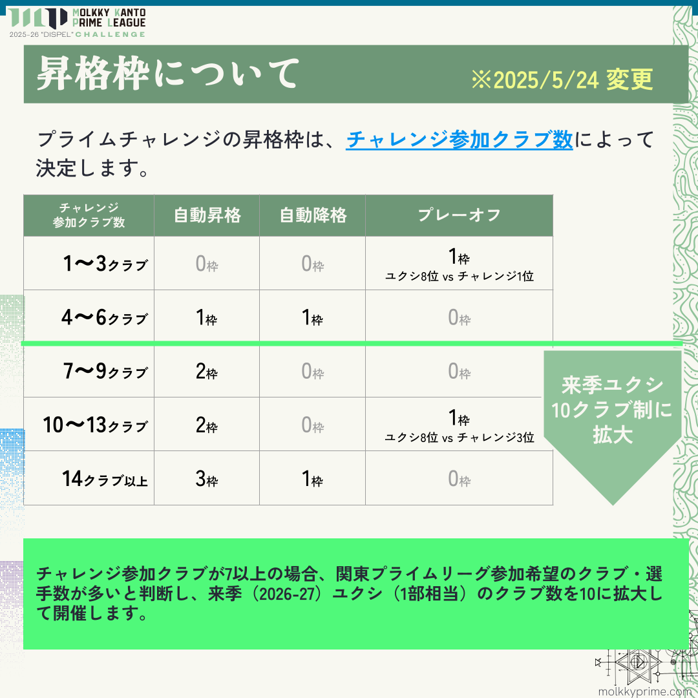

シーズン2025-26の見通し
確定はしていませんが、以下の事項は現在から変わらない予定です。
- クラブを8名以上の関東在住選手で構成する
- 1ヶ月1試合～2試合のペースで試合を行う
- 試合のルールはプライムリーグ（1部）に準じる
- チャレンジの参加クラブ数により入れ替え枠数を決定（シーズン開幕前に確定）
- 参加クラブ数が多い場合、総当たりではなくトーナメント形式となる場合あり
entry
1部リーグは2025-26シーズンから「モルック関東プライムリーグユクシ」に名称をマイナーチェンジします（「ユクシ」はフィンランド語で「1」を示す）。

| 項目 | 説明 |
|---|---|
| 大会名 | モルック関東プライムリーグユクシ 2025-26 "DISPEL" |
| 期間 | 2025年秋～2026年春 |
| 参加クラブ数 | 8クラブ
※2024-25シーズン1～7位クラブ、チャレンジ優勝クラブ |
| 大会形式 | ホームアンドアウェー総当り制 |
| 順位決定 | 勝ち点制
※並んだ場合はセット獲得率などで決定 |
| 降格枠数 | シーズン開幕前に決定 |
| 参加費 | シーズン開幕前に決定 |

エントリー開始！
新規にリーグ参入するクラブは、まず「モルック関東プライムリーグチャレンジ」にエントリーします。「プライムチャレンジ」内で優勝や上位に入賞することで、1部リーグである「モルック関東プライムリーグユクシ」に自動昇格、もしくは入れ替えPOへ進出することができます。
昇格条件は、シーズン開幕前に決定します。主に「プライムチャレンジ」参加クラブ数が多いほど入れ替え枠は増大します。
| クラブ | 都道府県 | 選手 |
|---|---|---|
| SISU | 神奈川 | ルーニー(L)、ヨシ、ましゃ、ヒロ(M)、ゆーき、ゆかり、スガラガ、じょー、Shishow、ハヤトマン、クズリ |
| さいたまぁず | 埼玉 | カトヤン(L)、づくづくづっちくん！？、なり、ジョニー、K、ぱん、たじ、ショウタマン、こじま、ゆうだい |
| Z-ÖNE | 東京 | ナカノ(L)、ぱや、チバ、やす、ソタ、さんさんたいよう、れん、やまもと、ゆーーだい、こーじ、サニー、ぽー、永濵侑、陸空 |
| SEVEN'S | 東京 | 落合剛(L)、イエ朗、チーヤマ、ヒラリー、ニシタク、どみ、もるまさ、オジ、どら、TARO、さきピー |
| 禅那 | 東京 | しん(L)、TKTK、マスラオ、りあ、どど、まりも、げっぺい、むっさん、ようへい、D-chi、ちゃちゃまる。NOKO、ただっち |
| 池袋ウッドペッカーズ | 東京 | きよし(L)、なるなる、さいとう、りょうや、たいき、きこ、ふじ、なおぽん、ひとみぃ、ちゃこ |
| ブラッキーズ | 東京 | ゆめこ(L)、リョウ、これこれ、うちゃ、おざ、Kuriking、Shinya、Mayuka、ヨコ、ヨウスケ |
| 杉並エンジョイモルック | 東京 | ホリウチ(L)、ジェット、タケさん、あい、なんちゃん、本田祐樹、スポーツ案内人・こーすけ、かつ、とび、マサノリ、Samuel、あけちゃん、ゴン太、しんじ |
(L)はリーダー、(M)はマネージャー。
| 項目 | 説明 |
|---|---|
| 大会名 | モルック関東プライムリーグチャレンジ 2025-26 |
| 期間 | 2025年10月～2026年春（4月～5月）予定 |
| 参加クラブ数 | 原則無制限 |
| クラブ条件 |
|
| 大会形式 | シーズン開幕前に決定 |
| 試合ルール | 「プライムリーグユクシ」の試合規定に準じる |
| 順位決定 | シーズン開幕前に決定 |
| 昇格枠数 | エントリー要項参照 |
| 参加費 | 無料 |
| エントリー開始 | 2025/5/11～2025/8/31 |





選手個人としてプライムリーグに参加したい意思を表明する場合は、FA（Free Agent）申請を行います。
下記のGoogleフォームから申請してください。申請後、リーグ運営から各クラブへ通知を行います。
FA申請はいつでも受け付けていますが、シーズン終盤は追加登録ができない期間があります。